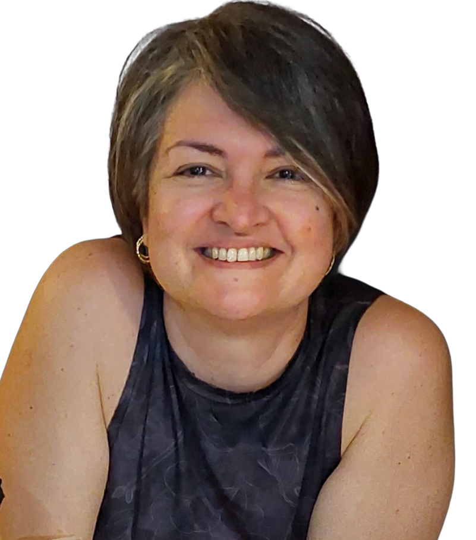

2007 — 2014
Doctora en Ciencias Humanas
Universidad de Los Andes · Venezuela
Venezolana viviendo en Colombia.

Soy humanista. Me formé como Comunicadora Social y tengo estudios de postgrado en Ciencias Políticas y Ciencias Humanas. Me desempeñé como periodista, divulgadora científica y gerente de proyectos culturales, una trayectoria profesional que me permitió explorar rutas de acercamiento entre la narración, el arte y la ciencia. Tengo 20 años ejerciendo en la docencia universitaria y he desarrollado el perfil de investigadora en ciencias sociales. Sigo formalmente rutas metodológicas para comprender la realidad social. He transitado por los siguientes temas de interés: relación entre medios de comunicación y democracia; impacto de Internet en la producción del conocimiento; expresión de la cultura política en el discurso digital. Como venezolana en Colombia, inicié más recientemente una ruta de investigación para comprender la migración en mujeres transnacionales, desde la perspectiva de las emociones. Me gusta el teatro. Canto cada vez que puedo.
Universidad de Los Andes · Venezuela
Universidad de Los Andes · Venezuela
Universidad de Los Andes · Venezuela
Universidad Autónoma de Bucaramanga (UNAB), Colombia.
Docente titular del Programa de Comunicación Social. Coordinadora de proyectos de investigación. Formadora en investigación en proyectos de semillero y directora de tesis. Cursos principales: Comunicación y Ciudadanía Digital; Periodismo de Datos; Comunicar Ciencia; Comunicar Migración.
Red CLARA. Comunicación de proyectos científicos o tecnológicos: LA-Referencia, GISELA y LA-CoNGA Physics.
Universidad Industrial de Santander. Programa de Filosofía de la Facultad de Humanidades.
Corporación Parque Tecnológico de Mérida. Centro Nacional de Cálculo Científico.
Universidad Cecilio Acosta. Programa de Comunicación Social.
Fundación para el Desarrollo de la Ciencia y la Tecnología, Mérida, Venezuela. Diseñé el concepto de la Unidad de Divulgación y dirigí iniciativas relacionadas con el diálogo entre la comunidad científica y distintos sectores de la sociedad.
Instituto de Acción Cultural, Mérida, Venezuela. Coordinadora de Casas y Centros Culturales en el estado Mérida. Gerente de proyectos.
Convocatoria UNAB: proyecto aprobado.
Investigadora principal.
Proyecto Erasmus · Representante institucional.
Investigadora principal.
Investigadora principal.
Investigadora principal.
Investigadora principal.
Investigadora principal.
Co-investigadora.
Un mundo de sonido hueco en el que ahora nos provoca entrar para escapar de tanto virus. Mientras tanto, la ciudad afuera cuelga de un gran lienzo, sin importar horario. Treinta centímetros de cartón yeso no son suficientes para guardar el color indeseado, el olor prohibido, la culpa apretujada. Por una rendija a veces se cuela la otra escena y los ojos no dan crédito por tanta sociedad intranquila, tan difícil de tapar con un dedoMás en mi blog personal ↗